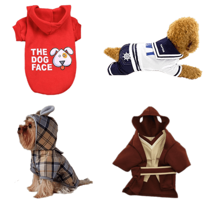

|
|
Para los consentidos del hogar...Los accesorios de mascotas son geniales para brindarnos una mejor convivencia con nuestros compañeros de hogar haciendo que sea más fácil y divertida.  1. JUGUETESLo mejor de los juguetes es que cada mascota puede tener una variedad ellos, para que no se aburran. Se aconseja para perros tener al menos una pelota, hueso de hilo, hueso de carnaza y algún juguete que involucre la participación del dueño (puede ser frisbee, juguetes tipo Kong donde el dueño rellena el juguete, entre otros). 2. COMEDEROS Y BEBEDEROSAntes de comprar un comedero, debemos elegir uno que sea de calidad, adaptado al tamaño, edad y actividad física de nuestra mascota. El uso de comederos y bebederos ayuda a evitar contaminantes del suelo, siendo de igual manera fáciles de lavar. 3. PLACASLas plaquitas con el nombre de la mascota y un numero de contacto mantienen a la mascota segura, ya que le dan una herramienta para volver a casa en caso de extraviarse. Es importante que la mascota porte la placa en todo momento, no solo durante el paseo, ya que puede salirse de casa en cualquier momento. 4. COLLARLos collares son los mejores Accesorios para Salir de Paseo con las Mascotas, ya que estos permiten llevar las placas de identificación en caso de que nuestra mascota se llegue a extraviarse 5. CAMA
Las camas permiten que nuestras mascotas puedan dormir con mucha comodidad. Por ello es muy importante que tu mascota pueda tener un lugar a donde pueda llegar y sentirse protegido y querido, al mismo tiempo de que se encuentra en tu casa y no anda merodeando en los alrededores buscando un escondite. 6. VESTUARIO Hay que decir que la ropa para mascotas puede llegar a ser un imprescindible para los animales pequeños en época de mucho frío, ya que no todas las razas viven en su hábitat y algunos pueden llegar a pasarlo mal en invierno. En ese sentido sí que es de gran ayuda para la mascota y para el dueño, que ve a su amigo calentito y contento a la hora de salir a pasear. |